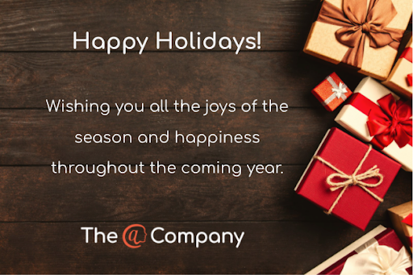

The @ Company Update - Nov/Dec 2021
As we wind down the year, we have a lot to be thankful for at The @ Company. We have had so much progress, and so much help from everyone in the community, we want to say a heartfelt thank you to all of our supporters and friends! We can’t wait to see what 2022 will bring.
Here are the November/December highlights:
Staff
- We are honored to have Gary Casey, from Google, join us this month. Gary’s deep technical expertise will help us take the @platform to the next level and make sure it is completely scalable.
Traction
- It is our goal to double the number of @sign every two months, so our goal for October/November was 2,000 @sign sign ups. We ended November with 2,662 new @signs, 600 over our goal!
Patents
- We received an email from our patent attorney saying, “This is either a happy Haunakkha present or an early Christmas present.” We received full indication of allowability on all 20 of our patent claims!
Positioning
- We have officially adopted “flip the internet” as our positioning.
- We are working on a new version of our website that should be up in December incorporating the new positioning.
Apps in Stores!!
Apps in Stores!!
- @mospherePro is looking great! You can now use it to send end-to-end encrypted files. If you want to try it out, let me know, I am happy to help you get up and running. Find it in the App Store or Play Store.
- Version 2.0 of @wavi should be released this week, so you can more easily edit your wavi weblet, adding colors and dark mode!
- @spacechat is getting close to release, this was a brilliant idea that came out of one of our first appathons at Pace University - it is a safe way to chat with strangers.
- CATWEB is focused on Amatuer Radio operators and is the first @ enabled application in both the Microsoft Windows store and the Apple Mac store. It is also available on Android and under review for iOS. If you know a “Ham,” let them know (there are 3 million worldwide.) CATWEB connects ham radios to @wavi weblets and displays Frequency and Modulation mode on the @wavi web page in near real time, creating an easy way to find out what band someone is currently active on - something that was not easy to do before.
Events
- Chris Swan spoke at DroidCon London on full stack Dart.
- We teamed up with Zariot to participate in HackPrinceton, where there were 6 entries for our Own Your Internet track, and the winners were:
- Grand Prize: Priv@teFit
- Honorable Mention: @octolink
- We have been working with a class from the University of Massachusetts and will be having a Demo Day with their apps this upcoming week.
- Our Demo Days (where the app developers demo their projects) have been taking on a new shape, but continue to showcase cool apps on the @platform, check out HackPrinceton honorable mention Octalink, which is a social media app for introverts, on our latest Demo Day.
- We also had another Runtime Live episode.
Call for developers
- We believe there are a lot of developers out there who want to build the next generation of social media. If you know any of them, please send them our latest post - #flipoffsocialmedia.
Partnerships
- We have signed on as part of the Data Collaboration Alliance.
- As mentioned above, we teamed up with Zariot at HackPrinceton, this is our first partner in the IoT space!
Techy stuff
Developer Journey - We have kicked off a concentrated effort for the month of December to begin focusing more on developer adoption. We have started by defining a target developer persona and a conceptual model of what the journey from discovery to actual implementation of our tech looks like, so that we can optimize their experience. For developers looking for a solution to some particular problem, we want to make it easier for them to understand the intent of the @platform, how it might be applied to their use case, and, most importantly, try it out for real to see how easy it is to implement.
- Improved documentation with a focus on SEO optimization.
- “Try it now” for all packages requiring less than 2 minutes to set up a working example.
- Implementation of these runnable examples as templates with the at_app CLI tool.
- Increase trust from other developers by focusing on the “first followers” and making it as easy as possible for them use and share the platform.
Dependability - Availability, Reliability, Security, and Privacy are the key aspects of the dependability of the @ platform as a whole, and we are continuously evolving our tech and infrastructure to make improvements across all these dimensions as we learn from real world experience.
- Even more automated testing has been a big focus of ours over the last couple of sprints and will continue to be. We are building a platform that needs to be 100% dependable so that developers and entrepreneurs can rely on us. Automated test coverage is a major part of this, and although it's not shiny, it is critical to our success.
Scalability - We had a couple of service outages this month which have prompted us to reassess some earlier choices of technology providers.
- We currently use Ubuntu as our Linux distribution for our Docker Swarm clusters, but we are finding that cloud-init causes excessive load under certain conditions on the worker nodes. So we are testing Flatcar Linux which is purpose-built for container workloads.
- Our certificate partner ZeroSSL has had a number of outages over the last few months so we are migrating back to LetsEncrypt and using ZeroSSL as a backup. We are also working on pre-generation of certificates so we do not have to rely on either provider being up.
Operability - As things continue to increase in scale, we need to have confidence that new releases work as expected and do not introduce new issues in production.
- We have built what we are calling our “canary cluster” using Flatcar Linux worker nodes to both test run the new distribution and test new builds on our own @signs before we roll out builds to the whole world. This is part of the progressive delivery workstream Chris has been leading.
Thank you all for your incredible support throughout 2021. We are humbled and appreciative! Wishing you and your families a wonderful holiday season and we look forward to seeing you in 2022!!
